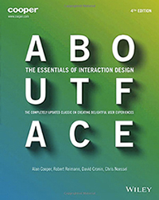

About Face: The Essentials of Interaction Design
by Alan Cooper, Robert Reimann, David Cronin, Christopher Noessel

- Paperback: 720 pages
- Wiley; 4th edition (September 2, 2014)
- Language: English
- ISBN-10: 1118766571
ISBN-13: 978-1118766576
- Dimensions: 9 x 7.5 x 1.4 inches